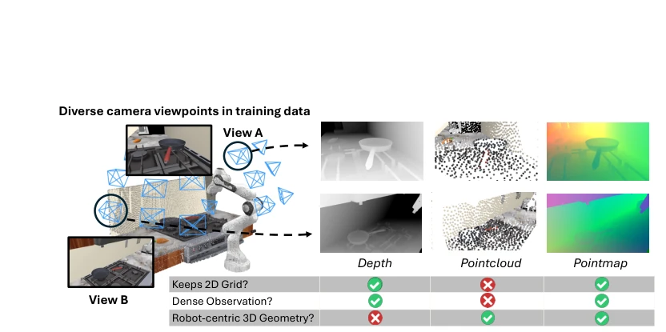
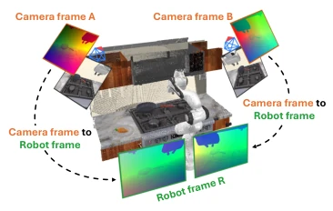
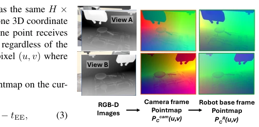
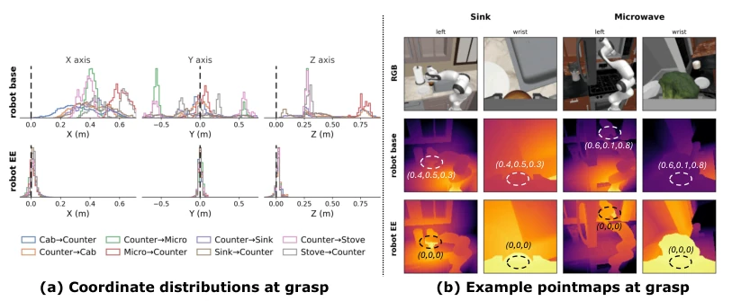
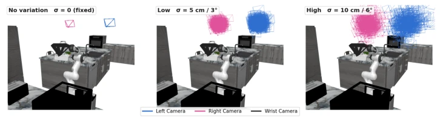
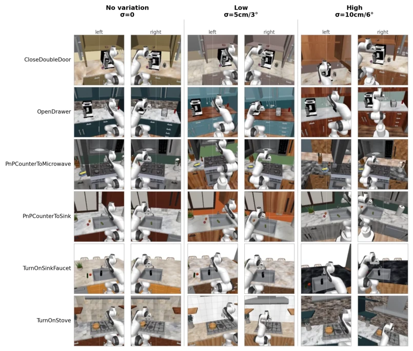
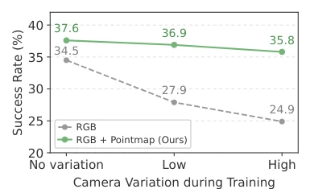
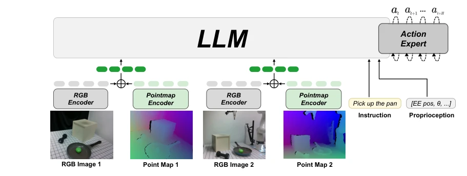

This paper performs a "coordinate system correction surgery" on VLA models. The authors keenly point out that robot actions are defined in the base coordinate system, while visual inputs are in the camera coordinate system; this "schizophrenia" can be passed off by memory under fixed viewpoints, but it exposes itself once viewpoints vary. Although point clouds can also provide 3D information, they disrupt the grid structure of 2D pre-trained models, and forcing in a point cloud encoder appears cumbersome. This paper cleverly stitches together using a "Robot-Centric Pointmap": converting depth maps into images in the robot coordinate system, where pixel values directly store XYZ, preserving the H×W grid for seamless VLA integration while eliminating coordinate ambiguity caused by viewpoints. However, this approach relies too heavily on calibration accuracy; if the camera is not calibrated, this "map" is skewed, counting as a "precision strike" rather than a "universal cure".
研究动机Motivation
VLA 模型的核心痛点在于观测与动作的坐标系不匹配 [1]。动作通常定义在机器人基座或末端执行器坐标系，但视觉输入多为相机帧的 RGB 或深度图。在固定视角下，策略或许能 memorize 映射关系，但在大规模数据集（如 Open X-Embodiment [6]）聚合多视角数据时，策略必须泛化不同视角到同一动作空间，这导致 frame mismatch 问题恶化。现有方法试图通过注入相机位姿信息 [15-18] 或构建共享 3D 表示 [24-25] 来解决，前者未将场景表达在机器人帧，后者丢失了 2D 图像结构。本文旨在提供一种既保留图像网格又直接提供机器人帧 3D 几何的输入方式，减少策略学习观测到动作映射的负担。
The core pain point of VLA models lies in the coordinate system mismatch between observation and action [1]. Actions are usually defined in the robot base or end-effector coordinate system, but visual inputs are mostly RGB or depth maps of camera frames. Under fixed viewpoints, strategies might memorize the mapping relationship, but when aggregating multi-viewpoint data in large-scale datasets (such as Open X-Embodiment [6]), strategies must generalize different viewpoints to the same action space, which exacerbates the frame mismatch problem. Existing methods attempt to solve this by injecting camera pose information [15-18] or constructing shared 3D representations [24-25]; the former does not express the scene in the robot frame, while the latter loses the 2D image structure. This paper aims to provide an input method that retains the image grid while directly providing robot frame 3D geometry, reducing the burden of strategy learning the observation-to-action mapping.

Figure 1: Robot-centric pointmaps provide 3D geometry aligned with robot-frame actions. Large-scale training data is collected from diverse camera viewpoints around the robot. Robot- centric pointmaps preserve the dense H ×W grid expected by pretrained 2D VLAs while providing robot-centric 3D geometry.

Figure 2: Observations from different cam- era frames are expressed in the coordinate frame where robot actions are defined.
方法Method
整体流程是将 RGB-D 观测转换为机器人中心点图（Robot-Centric Pointmap）。首先，利用相机内参和深度图将像素提升为相机帧下的 3D 点，再通过相机到机器人的外参变换将其转换到机器人基座坐标系。关键创新在于“末端执行器中心化”（End-Effector Centering），将点图坐标减去当前末端位置，使场景几何相对于动作空间原点，增强对视角变化的鲁棒性。编码阶段，使用与 RGB 编码器结构相同的独立塔（initialized from RGB encoder）处理点图，生成 token。融合阶段，采用逐元素相加（element-wise addition）而非拼接，将点图 token 直接叠加到 RGB token 上，无需额外 token 序列或点云编码器。这种设计让预训练 VLA 的视觉通路直接吸收机器人帧几何信息，实现了最小架构改动下的 3D 感知增强。
The overall process converts RGB-D observations into a Robot-Centric Pointmap. First, pixels are lifted to 3D points under the camera frame using camera intrinsics and depth maps, then transformed into the robot base coordinate system via extrinsic transformation from camera to robot. The key innovation lies in "End-Effector Centering", subtracting the current end-effector position from the pointmap coordinates, making scene geometry relative to the action space origin, enhancing robustness to viewpoint changes. In the encoding stage, an independent tower with the same structure as the RGB encoder (initialized from RGB encoder) is used to process the pointmap, generating tokens. In the fusion stage, element-wise addition is adopted instead of concatenation, directly superimposing pointmap tokens onto RGB tokens, without requiring extra token sequences or point cloud encoders. This design allows the pre-trained VLA's visual pathway to directly absorb robot frame geometry information, achieving 3D perception enhancement under minimal architectural changes.

Figure 3: RGB-D observations are lifted into camera-frame pointmaps and transformed into robot-frame pointmaps.

Figure 5: End-effector centering concentrates interaction targets near a common origin. (a) Target coordinates are broadly distributed in the robot-base frame but cluster near the origin in the end-effector-centered frame. (b) Two example tasks show that targets with different robot-base coordinates lie near the end-effector-centered origin at grasp.
Validated on RoboCasa [9] simulation benchmark and Franka real robots. Comparison baselines include camera-perception VLA (KYC, OC-VLA), 3D-enhanced VLA (GeoVLA, PointVLA), and point cloud strategies (FP3 [54], DP3 [55]). Metric is task success rate (Success Rate). Results show that on RoboCasa, the pointmap improved π0.5 [4] by 7.6 percentage points, SmolVLA by 4.2 percentage points, outperforming all baselines. Ablation studies indicate that pre-computing robot frame geometry is better than letting the strategy learn, image-form pointmaps are better than point clouds, and end-effector centering is better than base centering. In real experiments, under unseen camera viewpoints, RGB strategy performance dropped by 18.3%, while pointmap strategy dropped only 11.6%, proving its advantage in viewpoint generalization.

Figure 8: Camera-pose distributions across variation levels. Per-demonstration poses of the two third-person cameras, drawn as camera frustums in the robot-base frame (left camera in blue, right in pink; the end-effector wrist camera, in black, is never jittered). From No variation to High the position and orientation jitter grows from zero to (10cm, 6◦), widening the range of viewpoints the policy sees.

Figure 9: Qualitative examples across variation levels. For six tasks, the same frame is rendered under each training level for the left and right third-person cameras. Under No variation, the view- point is identical across demonstrations; under Low and High, growing per-demonstration jitter shifts and rotates the scene within the image. The robot-centric pointmap reduces this camera-induced variation by expressing the observed geometry in the robot frame.
其他图片Other Figures

Figure 6: Effect of training-time cam- era viewpoint variation. RGB performance drops as viewpoint variation increases, while RGB + Pointmap remains stable.

Figure 10: Model architecture. Each RGB-D camera observation is converted into an end-effector- centered robot-centric pointmap. RGB and pointmap inputs are encoded by separate SigLIP vision towers [56], and pointmap tokens are added element-wise to the corresponding RGB tokens before entering the pretrained VLA. The VLA predicts an action chunk from the fused visual tokens, lan- guage instruction, and proprioception.